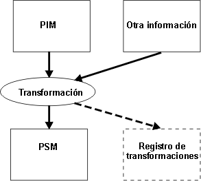
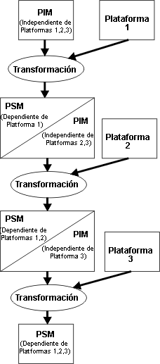

Introducción
Los modelos son un tipo importante de producto de trabajo en Rational Unified Process y suelen expresarse
(en RUP) mediante el lenguaje unificado de modelado (UML), en una herramienta y de un modo neutral para el entorno, de
modo que RUP pueda desplegarse y utilizarse con muchos conjuntos de herramientas en muchos entornos. Material de soporte: Modelado visual explora algunas de las razones para el
modelado, las cuales incluyen:
-
Ayudar a comprender los sistemas complejos
-
Explorar y comparar alternativas de diseño a un bajo coste como base para la implementación
-
Capturar requisitos de forma precisa
-
Comunicar decisiones de forma clara
Los modelos se ven como un modo de explicar la estructura y el comportamiento del sistema (tanto el deseado como el
real), así como comunicar los resultados de estas deliberaciones a las personas interesadas. MDD y MDA enfatizan el rol
de los modelos como elementos básicos para la implementación, esperando que lleguen no sólo patrones en los que se
basen los desarrolladores para escribir código, sino que también lleguen a utilizarse y ejecutarse hasta cierto punto
en función de la capacidad del conjunto de herramientas de soporte. De este modo, se sigue una tendencia, que empezó
hace mucho tiempo, de incrementar el nivel de abstracción en el cual trabajan los desarrolladores. Esto cambia el foco
de atención del código tal como lo conocemos, a modelos expresados en un lenguaje gráfico e incluso más elevado. RUP,
al identificar determinados artefactos como modelos en lugar de documentos (captando los requisitos y el diseño, por
ejemplo) que contiene imágenes de los modelos, da soporte a esta posibilidad de forma implícita.
Puntos de vista y vistas 
Un punto de vista, tal como implica su nombre, es una posición nocional desde la que se pueden ver algunos aspectos o
asuntos del sistema (o el conjunto de modelos que representan el sistema), lo que supone la aplicación de un conjunto
de conceptos y reglas para formar un filtro conceptual. El término "perspectiva" se utiliza de forma similar para
describir un modo de ver y comprender modelos que son más útiles para las diferentes orientaciones y preocupaciones de
las diferentes personas interesadas.
Las vistas son proyecciones de modelos que muestran entidades importantes desde un punto de vista o perspectiva
particular.
En MDD, los puntos de vista y las vistas se utilizan para separar preocupaciones, por ejemplo, para tratar con la
estructura lógica independientemente de la estructura física y de la estructura del proceso. Cuanto más cercanos estén
los modelos al dominio del problema, más sólidamente se asignarán los puntos de vista y las perspectivas a las
preocupaciones empresariales de los interesados. Puesto que los modelos se desarrollan con un formato cercano al
ejecutable, las preocupaciones computacionales suponen un obstáculo. En cualquier caso, el objetivo no es simplemente
producir ilustraciones pasivas, sino modelos que sean, al menos potencialmente, generadores de implementaciones que
satisfagan las diferentes preocupaciones.
Elaboración y conversión
(transformación)
Estos términos se utilizan a menudo informalmente para distinguir entre los cambios a modelos realizados a mano
(elaboración) y mediante una herramienta (conversión). En RUP, la elaboración tiene un significado formal algo
diferente, se trata del nombre de una fase de ciclo de vida, pero en esta sección, la utilizamos de forma informal para
ilustrar enfoques aparentemente diferentes a la evolución de los modelos.
También se entiende el tamaño de paso de forma diferente en la conversión y la elaboración, en el sentido que un modelo
se elabora en diferentes pasos pequeños hasta que existen detalles suficientes (incluidos el lenguaje, la
infraestructura o el sistema operativo) como para generar código a partir de éste, ya sea mediante una herramienta o de
forma manual. De forma manual, se refiere a que una persona puede observar el modelo y escribir Java, C++ u otros
lenguajes y posiblemente seguirá trabajando en dicho modelo durante el proceso. Por el contrario, en la conversión, el
modelo, todavía en el nivel de abstracción no modificado por preocupaciones de lenguaje, infraestructura o sistema
operativo, se convierte en algo que ejecuta y produce el resultado deseado con muy poca elaboración. Tenga en cuenta
que el resultado deseado incluye el rendimiento y otras características no funcionales. Por lo tanto, en este enfoque
se entiende que las preocupaciones de arquitectura transversales se tratan según el modo en que se construya el modelo
y el modo en que describe los requisitos de recursos.
Otro término, Definición
de término: transformación, se utiliza de forma regular, para describir el proceso de generación de un modelo de
destino a partir de un modelo de origen siguiendo un conjunto de reglas y trabajando según un conjunto de parámetros.
Tenga en cuenta que se utiliza el término "modelo" en esta publicación del mismo modo que RUP, de modo que el modelo de
destino puede ser los elementos de implementación como, por ejemplo, código o texto. Por descontado, la transformación
puede realizarse a mano, con lo cual las transformaciones sucesivas (adición de detalle) equivalen a la elaboración y
las reglas pueden llegar a ser muy complejas y enraizadas en experiencia sólida de la tecnología disponible y del
dominio. Sin embargo, el significado predeterminado es que la transformación se realiza de forma automática, la cual se
vuelve a examinar en la sección siguiente en la que se trata la arquitectura controlada por modelo®.
Tenga en cuenta que la idea de transformar simplemente implica un modelo de origen y un modelo de destino. El caso
habitual es que el modelo de destino es menos abstracto que el modelo de origen; es decir, que el destino es, de algún
modo, más específico que el origen. De todos modos, esto no está implícito en la idea de transformación. Tenga en
cuenta que la transformación también puede añadir detalles a un modelo y producir, de este modo, un modelo de destino
más perfeccionado, a la vez que, en términos generales, se mantiene al mismo nivel de abstracción ya que no se
introduce ninguna información relevante en otro dominio. Contraste esto con una transformación que cree código a partir
de un modelo UML. En tal caso, se introducen muchos datos en el modelo de destino en cuestión; es decir, que aquellos
datos que no afectan al interesado en la empresa, siempre que se mantengan el comportamiento necesario y las
características no funcionales.
La capacidad de llevar a cabo el ideal de conversión depende de las capacidades de la herramienta y de nuestra
habilidad de codificar, capturar y reutilizar los conocimientos empleados por un experto. La cantidad de conocimiento
que debe capturarse y codificarse depende del nivel de abstracción a partir del cual se realiza el paso de conversión.
Normalmente, cuanto más elevado sea el nivel, mayores serán los conocimientos y la dependencia del dominio.
En MDD, nos esforzamos por elevar el nivel de abstracción desde el cual podemos generar automáticamente un sistema
operativo. Un modelo se elabora hasta el punto en que se puede utilizar para generar algo. A continuación, la
preferencia es que la salida no tenga que seguir elaborándose para ejecutarla. Además, nuestro objetivo es llevar a
cabo la elaboración al máximo a través de transformaciones automáticas. De este modo, los dos enfoques convergen: la
conversión se realiza siguiendo pasos de transformación sucesivos que se automatizan hasta la medida de lo posible. La
transformación final para ejecutar el sistema se lleva a cabo cuando la descripción del modelo todavía se encuentra en
un nivel de abstracción elevado y con la tecnología, la infraestructura y las selecciones de idioma de destino
codificados en el motor de transformación, así como las reglas y los datos proporcionados para éste.
Un beneficio adicional de MDD es que esperamos poder reutilizar transformaciones, haciendo que codifiquen la plataforma
y el conocimiento de dominio y las recomendaciones a través de la creación realizada por expertos en los dominios
correspondientes. De este modo, facilitamos que los desarrolladores menos experimentados reutilicen las
transformaciones y evitamos que se tengan que volver a crear desde cero con cada nueva aplicación.
¿En qué consiste un nivel elevado de abstracción?
Esta cuestión puede abordarse desde varios puntos de vista. Uno es que junto al espectro del idioma y vemos la
emergencia de formas de UML ejecutables, por ejemplo. Otro es desde la perspectiva de la ingeniería de dominios, en la
que los conceptos de lenguaje y modelado pueden ser especializados del dominio. Por ejemplo, UML es un lenguaje de uso
general, con lo cual, junto con esta dimensión, encontrará el uso de Definición de
término: Perfil UML para especializar el uso de UML. Otro modo de enfocar esta cuestión es por la necesidad de
evitar modelos específicos de proveedor e infraestructura para permanecer abiertos a la nueva tecnología.
En términos de expresión de la dinámica detallada, el trabajo realizado en Semántica de acciones UML ha hecho
que las formas ejecutables de UML sean posibles, pero la sintaxis y la notación concretas no están estandarizadas y el
nivel de la semántica de acciones está estrechamente relacionado con otros 00 lenguajes. Por lo tanto, es probable que
UML y la semántica de acciones no sean la respuesta final, pero existe una indicación acerca de hacia donde se dirigen
las cosas.
Concluimos que un modelo expresado en UML o mediante un perfil UML que no contiene elementos dependientes del
proveedor, no depende de una plataforma de infraestructura particular como, por ejemplo, J2EE o Microsoft® .NET, y su
semántica está completa por lo que se refiere a la estructura y al comportamiento sin que tenga que acudirse a un
lenguaje de procedimiento particular (Java, C#, ...) se encuentra en un nivel elevado de abstracción según esta
definición, aunque la cuestión del nivel de semántica de acciones sigue sin estar modificada.
Desde la perspectiva de dominio de problemas; es decir, desde el punto de vista del usuario o del cliente empresarial,
una posible solución atractiva es la formulación de lenguajes de modelado específicos de dominio. Estos lenguajes son
abstractos, en el sentido que se formulan en términos y conceptos familiares a los trabajadores de un dominio
particular. De todos modos, tienen todas las facultades de expresar la dinámica de modelo a la vez que siguen basándose
en UML.
¿Qué relación tiene esto con RUP?
La relación de los modelos de análisis, implementación y análisis RUP ilustra las ideas siguientes: el modelo análisis representa una primera vista de cómo el
comportamiento utilizado en los casos se llevará a cabo. Naturalmente, no se falsea de forma descriptiva por lo que se
refiere al dominio del problema que se está tratando y las clases de análisis que contiene se consideran como agrupaciones
conceptuales de las responsabilidades y el comportamiento necesarios. El modelo de análisis no suele ser lo
suficientemente completo para ejecutarse, excepto, tal vez, en un experimento mental realizado por una persona que lea
el modelo y que relleno los espacios, ya que quedan mucha información que relatar. En su lugar, el modelo de análisis
deben pasar a través de un proceso de perfeccionamiento, en el que se añade detalles y precisión, con lo cual se
obtiene el modelo de diseño.
RUP permite a un proyecto mantener un modelo de análisis separado o considerar dicho modelo como algo que evoluciona
hacia el modelo de diseño. El proceso de perfeccionamiento se describe hasta cierto punto en las tareas RUP, con la
interpretación predeterminada según la cual los usuarios llevan a cabo roles de arquitecto de software y el diseñador
llevará a cabo dicha evolución, probablemente con la ayuda importante de una herramienta. Tenga en cuenta que este
perfeccionamiento se puede considerar como una secuencia de transformaciones de modelo, algunas de las cuales pueden
llegar a automatizarse, por ejemplo, en la aplicación de patrones Definición de término: patrón de análisis y Definición
de término: patrón de diseño en las tareas RUP Análisis
de arquitectura y Identificar mecanismos de diseño .
¿Cuándo se completa un
modelo de diseño?
El modelo de diseño evoluciona durante la vida del proyecto, por las diferentes repeticiones; por lo tanto, ¿cuándo
puede el modelo de diseño (o una parte de éste) convertirse en código? es decir, ¿cuándo podemos empezar a crear elementos de implementación e integrarlos en compilaciones interesantes del sistema? RUP ofrece algunas
directrices sobre la correlación de diseño a código, aunque fundamentalmente no existen respuestas rápidas
ni definitivas. Se pasa a la implementación cuando, mediante la revisión de un ejemplo, y usted debe valorar si puede,
y dicho punto puede variar de forma considerable entre organizaciones y proyectos. RUP ofrece un número de modos de
proceder desde el diseño hasta el código, dos de los cuales se tratan aquí para ilustrar el modo en que se toman
decisiones sobre la finalización del diseño:
1. Esbozo y código
RUP dice: "Una propuesta común de diseño es un esbozo a nivel bastante abstracto que, posteriormente, se pasa
directamente a código. El mantenimiento del modelo de diseño es manual."
Para tener éxito con este enfoque, es necesario que el desarrollador pueda crear un puente del espacio de abstracción
entre los niveles de diseño y de implementación. A menudo, el mantenimiento del modelo de diseño es una preocupación
secundaria y el código se convierte en el objeto de atención principal.
2. Ingeniería directa e inversa (RTE) con modelo único de diseño en desarrollo
RUP dice: "En esta propuesta, sólo hay un modelo de diseño. Los esbozos iniciales de elementos de diseño
evolucionan hasta que se pueden sincronizar con el código."
Aquí, los desarrolladores cierran el espacio de abstracción con una secuencia de pasos de modelado. La diferencia entre
este enfoque y "esbozo y código" es que los pasos intermedios son obvios y, al final, la versión abstracta del modelo
de diseño desaparece.
En ambos casos, el valor potencial de un modelo de diseño abstracto se pierde. En "esbozo y código" debido a que el
modelo de diseño abstracto no suele mantenerse y, con el tiempo, pierda contacto con el código y en "modelo único de
diseño en desarrollador" debido a que la versión abstracta desaparece. Aunque se mantenga una versión inicial,
normalmente termina igual que el modelo de diseño de esbozo y diseño. Tenga en cuenta que el punto final del modelo de
diseño con RTE es, en realidad, la visualización del código y una visualización similar podría tratarse con la
ingeniería directa e inversa a partir del código producido en el modelo de esbozo y código con las herramientas
adecuadas. En RUP, se mitiga la pérdida del modelo de diseño abstracto, en cierta medida, capturando las vistas de
arquitectura significativas y los fundamentos del diseño, en puntos críticos, en el documento de la arquitectura del
software.
MDD ofrece la posibilidad de que el modelo de diseño abstracto pueda convertirse en un elemento básico para la
generación de código y pueda perdurar. Se convierte en la base principal para el mantenimiento y, de hecho, puede que
sea la única base para el mantenimiento. También ofrece una definición clara del punto final para el diseño, es decir,
el punto en el que, por lo que se refiere al motor de transformación, el modelo está completo, coherente y precio y
puede convertirse en un sistema ejecutable. El nivel de abstracción del modelo depende de la tecnología y el conjunto
de herramientas disponibles (para ver un ejemplo al respecto, consulte el  Visita guiada: Visión general de Rational Software Architect) y
es posible que también dependa del dominio. Tenga en cuenta que por lo que se refiere a MDD, esto es simplemente otra
transformación (de diseño a código), aunque importante, ya que pasa por los niveles de abstracción. Visita guiada: Visión general de Rational Software Architect) y
es posible que también dependa del dominio. Tenga en cuenta que por lo que se refiere a MDD, esto es simplemente otra
transformación (de diseño a código), aunque importante, ya que pasa por los niveles de abstracción.
En la sección siguiente, se describe un estándar de infraestructura emergente para MDD, una iniciativa del grupo de
gestión de objetos (OMG)® (MDA®).
Arquitectura controlada por modelo (MDA)
Motivación
MDA es una iniciativa de OMG, un consorcio del sector formado por unos 800 miembros con el objetivo de establecer
directrices y especificaciones estándar para proporcionar una infraestructura neutral de proveedor para el desarrollo
de aplicaciones y para fomentar la interoperabilidad entre plataformas de infraestructura de hardware y software
importantes. El lenguaje unificado de modelado es un producto de OMG. OMG promueve MDA como su especificación más
importantes y ocupando la posición de promulgación de estándares prácticos de OMG con el objetivo de que sean
compatibles con IC del sector, la práctica, los productos y las herramientas. Así mismo, vale la pena convertir el
éxito de UML y MDA en objeto de estudio. Existe una gran cantidad de información en MDA, incluida la guía MDA más
reciente [OMG03], en el sitio
web de OMG. También existen varios libros disponibles, como, por ejemplo [FRA03], [KLE03], y [MEL04] y muchos artículos como, por ejemplo, "An MDA Manifesto" por Grady Booch, Alan
Brown, Sridhar Iyengar, James Rumbaugh y Bran Selic en The MDA Journal, Mayo de 2004.
Ideas principales de MDA
MDA introduce algunos conceptos y terminología específicos que la distinguen de enfoques más generales a MDD. Dichos
enfoques se definen y tratan en las secciones siguientes.
Modificación de estándares
existentes
MDA está respaldad por estándares OMG existentes, que incluyen:
-
El recurso de metaobjeto (MOF): además de definir un lenguaje para la construcción de metamodelos, por ejemplo, UML
y CWM, el recurso MOF define una infraestructura para la implementación de depósitos para
modelos y metamodelos, lo cual permite tener un enfoque coherente para la manipulación de dichos modelos a la hora
de utilizar MDA. De este modo, el recurso MOF es una tecnología esencial para MDA.
-
El lenguaje unificado de modelado (UML): los PIMs, PMs y los PSM se definen en UML, que es la
notación básica de MDA.
-
Intercambio de metadatos XML (XMI): XMI define el formato de intercambio de un modelo UML basándose en XML.
-
El metamodelo de almacén común (CWM): la relación
existente entre UML y el modelado de aplicaciones es la misma que entre CWM y el modelado de datos.
Independencia de
plataforma
Una noción intuitiva de una Definición de
término: plataforma es que da soporte a una capa de arquitectura superior a través del suministro de servicios con
un conjunto de interfaces bien definido que ocultan los detalles de la implementación. La definición de OMG (en la guía
MDA) de plataforma es:
"Conjunto de subsistemas o tecnologías que proporcionan un conjunto coherente de funciones a través de interfaces y
patrones de uso especificado que cualquier subsistema que depende de plataforma puede utilizar sin preocuparse de los
detalles de cómo se implementan las funciones que proporciona la plataforma."
Esto es similar al concepto de una Definición de
término: capa tal como se utiliza en RUP.
La idea de la independencia de plataforma no está del todo fijada. Se trata de una calidad o una
característica de un modelo, por ejemplo, se puede decir que un modelo es independiente de una plataforma determinada
cuando no contiene referencias a servicios ni a la capacidad proporcionada por dicha plataforma. Sin embargo, tal
afirmación es relativa, ya que es difícil concebir una forma absoluta de la independencia de la plataforma. en la guía
MDA se reconoce esto y también se afirma que existe la posibilidad de que existan grados de independencia de plataforma
por lo que se refiere a una plataforma particular en la que, por ejemplo, un modelo utiliza una forma generalizada de
una característica en una plataforma determinada.
La consecución de la independencia de plataforma ha sido respaldada por la evolución de plataformas como, por ejemplo
J2EE, .NET y WebSphere, con el objeto de incrementar los niveles de abstracción en términos de lo que se expone en las
aplicaciones. Esto permite manejar mejor la identificación de construcciones neutrales de plataforma y resulta más
simple y fácil escribir las transformaciones específicas de plataforma que las convierten.
Modelo independiente de plataforma (PIM)
A continuación, podemos afirmar que un modelo es un PIM en relación con una plataforma determinada cuando no está
destinado a utilizarse en dicha plataforma y puede utilizarse con cualquier plataforma del mismo tipo. En la sección
anterior, hemos tratado la idea de un nivel alto de abstracción y hemos concluido en que un modelo expresado en UML (o
mediante un perfil UML) que no contiene elementos dependientes de proveedor, no depende de una plataforma de
infraestructura determinada y es semánticamente completo por lo que se refiere a estructura. También se ha concluido
que el comportamiento sin recurso para un lenguaje de procedimiento particular se podía ejecutar desde el punto de
vista de la noción y en un nivel elevado de abstracción. ¿Es este tipo de modelo independiente de plataforma? Sí y no.
No, por lo que respecta a una posible máquina virtual UML imaginaria, y sí por lo que respecta a una clase completa de
plataformas de la que dicha máquina virtual podría depender.
Modelo de plataforma
El modelo de plataforma es ese conjunto de conceptos (que representan los componentes y servicios), especificaciones,
definiciones de interfaces, definiciones de restricciones y otros requisitos que necesita una aplicación para utilizar
una plataforma determinada. En MDA, los modelos de plataforma se detallan y formalizan en UML, por ejemplo, y se
encuentra disponibles en un depósito compatible con MOF. Por ejemplo, los modelos de plataforma pueden crearse para
J2EE o .NET, entre otros.
Modelo específico de plataforma (PSM)
Un PIM se transforma en uno o varios PSM mediante la adición de información que lo hacen específico de una o varias
plataformas particulares. Los modelos PIM y PSM siguen especificando el mismo sistema, pero el PSM está limitado a una
tecnología particular y puede contener elementos específicos de plataforma. Tenga en cuenta que no existe implicación
alguna de que un paso de transformación (de PIM a PSM o su plataforma asociada) sea grande o pequeño. Una
transformación que implique la aplicación de un pequeño conjunto de patrones perfecciona el modelo y, en cierto modo,
lo hace más específico. Esto enfatiza la relatividad de los términos PIM y PSM.
Puntos de vista y vista
Estos términos se utilizan en MDA del mismo modo que se ha descrito para MDD:
-
Un punto de vista, tal como implica su nombre, es una posición nocional desde la que se pueden ver algunos aspectos
o asuntos del sistema, lo que supone la aplicación de un conjunto de conceptos y reglas para formar un filtro
conceptual. Puesto que se elimina parte de la información del sistema, se trata de una forma de abstracción. El
término perspectiva se utiliza de forma similar.
-
Desde un punto de vista, se pueden ver vistas, que son proyecciones de modelos, con entidades que son
relevantes desde dicho punto de vista.
MDA especifica tres puntos de vista en un sistema: un punto de vista independiente de computación, un punto de vista
independiente de plataforma y un punto de vista específico de plataforma.
Punto de vista
independiente de computación
Desde el punto de vista independiente de computación, debe observar el contexto del sistema, los requisitos y
limitaciones según los cuales debe operar y los elementos del entorno con los que debe interactuar. Desde este punto de
vista, no se ven los detalles de la estructura ni del comportamiento del sistema.
El modelo independiente de cálculo (CIM) es una vista de un sistema desde un punto de vista
independiente de computación. El CIM es similar conceptualmente a una combinación del modelo de dominio en RUP, el cual
es el conjunto de artefactos, incluido el glosario empresarial y el modelo de análisis empresarial, que es la salida de
la tarea Desarrollar un modelo de dominio (en un modelado empresarial), y el modelo de guión de uso, el cual es una
descripción independiente computacionalmente del comportamiento del sistema. El CIM, que se expresa en el idioma del
tema o de los expertos en el dominio, es un enlace importante en la identificación, durante el análisis y el diseño, de
las abstracciones clave en el sistema de creación.
Punto de vista independiente
de plataforma
El punto de vista independiente de plataforma está relacionado con una plataforma particular. Desde este punto de
vista, puede ver la estructura y el comportamiento de un sistema sin los detalles de dicha plataforma. El PIM es una
vista del sistema desde el punto de vista independiente de plataforma.
Punto de vista específico de
plataforma
Desde el punto de vista específico de plataforma, que también está relacionado con una plataforma específica, puede ver
la información que podía ver desde el punto de vista independiente de plataforma pero con los detalles de utilización
de la plataforma. El PSM es una vista del sistema desde un punto de vista específico de plataforma.
Automatización de la
transformación
La idea de la transformación es fundamental para MDA y la transformación de modelos se define simplemente como "el
proceso de convertir un modelo en otro modelo del mismo sistema". MDA también define un pequeño patrón para
visualizar la conversión y para ilustrar el uso de algunos de los términos que hemos visto hasta ahora:

El patrón MDA
El diagrama tiene la finalidad de mostrar que la transformación es un proceso de calidad: la transformación utiliza el
PIM y otra información y los combina para crear el PSM.
Por descontado, la transformación de modelos puede realizarse de forma manual. Esto no varía mucho del modo en que
siempre se ha llevado a cabo el diseño de software. Incluso en este caso, MDA resulta útil a la hora de delinear y
formalizar la idea de la transformación, el proceso y la información adicional que debe utilizarse. MDA también sugiere
la creación de un registro de la transformación. De este modo, se proporciona una rastreabilidad fidedigna del PIM al
PSM, ya que debe incluir un mapa desde los elementos del PIM a los elementos del PSM. La mayoría de la optimización se
obtiene al poder automatizar transformaciones, aunque sólo sea de forma parcial, obteniendo los mismos beneficios que
se derivan de la sustitución de la programación de ensamblador con lenguajes de alto nivel.
¿Cómo se lleva a cabo la
transformación?
MDA no prescribe un solo modo de llevar a cabo la transformación: se prepara una correlación, controlada por la
plataforma seleccionada, para especificar el modo en que debe transformarse un PIM en PSM para dicha plataforma. Dicha
correlación da lugar a una definición de transformación (tal vez expresada como conjunto de reglas de transformación),
posiblemente con parámetros de transformación, escritos en un lenguaje de definición de transformación. Tenga en cuenta
que el OMG ha emitido un RFP (MOF 2.0 Query/Views/Transformations RFP) esperando la estandarización (para MOF) de
lenguajes para la creación de vistas de modelo, la consulta de modelos y la elaboración de definiciones de
transformación. La guía MDA describe varios enfoques por lo que se refiere a la transformación, entre los que se
incluye:
-
Transformación de metamodelos: este enfoque supone que hay un metamodelo MOF de nivel PIM en el lenguaje en el que
se crea el PIM. Igualmente, para la plataforma seleccionada, existe un metamodelo de nivel PSM en el lenguaje en el
que puede construirse un PSM. A continuación, se utiliza una correlación entre los dos metamodelos para construir
una definición de transformación. Ésta se utiliza para transformar el PIM en PSM.
-
Marcación: se prepara una correlación de la plataforma seleccionada. Esta correlación se utiliza para construir una
definición de transformación, la cual incluye un conjunto de marcas que se utilizan para marcar elementos del PIM,
con lo cual se obtiene un PIM marcado y una definición de lo que debe hacerse con los elementos marcados. A
continuación, se continua transformando el PIM marcado para crear el PSM. El marcado suele ser un proceso manual,
pero la transformación subsiguiente puede ser automatizada.
-
Transformación de modelos: el PIM se crea utilizando tipos independientes de plataforma, también especificados en
un modelo, donde los elementos del PIM son subtipos de los tipos independientes de plataforma. Se selecciona una
plataforma particular, la cual se asocia con un conjunto de tipos específicos de plataforma. Se realiza una
correlación entre los dos conjuntos de tipo y se obtiene una definición de transformación, que se aplica al PIM,
con lo cual es crea un PSM expresado en subtipos de los tipos específicos de plataforma. Este enfoque es algo
similar a la transformación de metamodelos, excepto por el hecho de que la transformación está limitada a tipos de
un modelo en lugar de a conceptos de un metamodelo MOF.
-
Aplicación de patrón: el PIM se crea mediante un conjunto de tipos y patrones abstractos que son independientes de
la plataforma. Para la plataforma seleccionada, existe un conjunto de tipos y patrones específicos de plataforma.
Se crea una correlación entre los dos conjuntos de tipos y patrones, con lo cual se obtiene una definición de
transformación que debe aplicarse al PIM. Esto crea un PSM en el que los patrones abstractos se convierten en
específicos de plataforma.
Para obtener más detalles, consulte la guía MDA [OMG03].
¿Cómo se aplica la transformación?
El escenario más simple para la aplicación de MDA es:
-
Preparar un PIM
-
Seleccionar una plataforma
-
Preparar una correlación si no existe ninguna
-
Aplicar la transformación para producir un PSM
-
Convertir el PSM en código. Si no es necesario seguir perfeccionando el PSM y se puede implementar directamente, se
tratará de una implementación, tal como se define en la sección siguiente.
Es posible generar PSM para otras plataformas del mismo modo.
Aplicación repetida del patrón MDA 
Sin embargo, el patrón MDA se adapta bien a la aplicación repetida: un PSM generado en un nivel se convierte en PIM
para el siguiente; es decir, una selección de plataforma cada vez más especializada. Tenga en cuenta que en MDD, tal
como se ha descrito en RUP y su soporte con el conjunto de herramientas Rational de IBM, nuestra preferencia es
minimizar el número de pasos de perfeccionamiento; es decir, proceder a partir de una representación que sea cercana a
la sentencia de problema del cliente para una forma ejecutable de la forma más directa posible.

Aplicación repetida del patrón MDA
La finalidad del diagrama anterior es mostrar tres aplicaciones del patrón MDA, con el PIM inicial convirtiéndose en un
PSM dependiente de la plataforma 1. A continuación, se vuelve a depender de la plataforma 2, luego se vuelve a
transformar para que dependa de las plataformas 1, 2 y 3.
Transformación general entre modelos
Los mismos conceptos pueden aplicarse a una transformación general; es decir, de cualquier modelo a cualquier modelo.
Si, por ejemplo, existen dos metamodelos cuyos idiomas se utilizan para expresar los modelos, se podrá crear, en
principio, una correlación con la que se obtendrá una definición de transformación. Esto se aplica tal como se ha
descrito para la transformación de PIM en PSM.
Implementación
La guía MDA utiliza "implementación" de un modo parecido al modelo de implementación de RUP. Se trata de una
especificación de todos los Elementos de implementación necesarios para construir, desplegar,
instalar y hacer funcionar el sistema.
Un PSM en sí puede ser una implementación o puede que sea necesario perfeccionarlo más para que pueda convertirse en
código. Tenga en cuenta que la producción de un PSM de implementación puede omitir el paso en el que se muestra el PSM
y puede convertirse directamente en código. En este caso, el PIM más abstracto puede convertirse directamente en código
mediante el motor de transformación. Es posible que todavía se proporcione una visualización del código para mejorar la
comprensión del desarrollador, aunque se puede revertir la ingeniería de esto a partir del código.
Ventajas supuestas
Portabilidad e
interoperabilidad
MDA ofrece la posibilidad de llegar a controlar los gastos e inconvenientes del avance de la tecnología permitiendo
volver a dirigir un conjunto relativamente estable de PIM a la tecnología que sea necesaria. La expectativa es que, con
la cada vez mayor aceptación de MDA, los desarrolladores de la nueva tecnología también proporcionarán correlaciones de
modo que las transformaciones puedan realizarse rápidamente.
Al ampliar las correlaciones PIM-PSM para dos plataformas, MDA sugiere la creación de "puentes" entre los dos PSM y, en
último término, entre las dos implementaciones, de modo que se pueda distribuir un PIM por las plataformas. La mayoría
de empresas se enfrentan al hecho de tener que desarrollar entornos heterogéneos con una mezcla de tecnologías antiguas
y nuevas; por lo tanto, esta posibilidad de llevar a cabo la interoperabilidad puede llegar a resultar realmente
ventajoso.
Coste de ciclo de vida reducido
Productividad
El centro de atención del desarrollo con MDA pasa a ser el PIM más abstracto. Con un conjunto de herramientas potentes
para generar un PSM (o código), un entorno de estas características debería ser más productivo de un modo bastante
parecido a lo que supone trabajar con un lenguaje de alto nivel es más productivo que trabajar en un ensamblador,
particularmente si un PIM, o un elemento parecido, se desarrolla a menudo utilizando un método cualquiera, por ejemplo,
para servir como modelo de diseño en RUP. El aumento de la productividad depende principalmente de la intervención
manual que sea necesaria en el proceso de transformación.
Calidad
Idealmente, en MDA, el objetivo de mantenimiento es el PIM. En consecuencia, con la condición de que la arquitectura
del PIM sea correcta, deberían haber menos defectos en la vida del producto, ya que existen menos ocasiones en las que
una persona puede "inyectar" dichos defectos. La reparación de los defectos que se encuentren debería resultar más
económica, gracias a las ventajas de la transformación automática. La concentración en el PIM también está más
estrechamente alineada con cuestiones del dominio, con lo cual es posible que la probabilidad de satisfacer las
necesidades del usuario sea mayor.
|